电容去耦原理(解释十分透彻)
采用电容退耦是解决电源噪声问题的主要方法。这种方法对提高瞬态电流的响应速度，降低电源分配系统的阻抗都非常有效。
对于电容退耦，很多资料中都有涉及，但是阐述的角度不同。有些是从局部电荷存储（即储能）的角度来说明，有些是从电源分配系统的阻抗的角度来说明，还有些资料的说明更为混乱，一会提储能，一会提阻抗，因此很多人在看资料的时候感到有些迷惑。其实，这两种提法，本质上是相同的，只不过看待问题的视角不同而已。为了让大家有个清楚的认识，本文分别介绍一下这两种解释。
1、从储能的角度来说明电容退耦原理。
在制作电路板时，通常会在负载芯片周围放置很多电容，这些电容就起到电源退耦作用。
其原理可用图 1 说明。
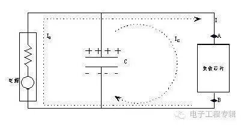
图 1 去耦电路
当负载电流不变时，其电流由稳压电源部分提供，即图中的 I0，方向如图所示。此时电容两端电压与负载两端电压一致，电流 Ic 为 0，电容两端存储相当数量的电荷，其电荷数量和电容量有关。当负载瞬态电流发生变化时，由于负载芯片内部晶体管电平转换速度极快，必须在极短的时间内为负载芯片提供足够的电流。但是稳压电源无法很快响应负载电流的变化，因此，电流 I0 不会马上满足负载瞬态电流要求，因此负载芯片电压会降低。但是由于电容电压与负载电压相同，因此电容两端存在电压变化。对于电容来说电压变化必然产生电流，此时电容对负载放电，电流 Ic 不再为 0，为负载芯片提供电流。根据电容等式：
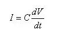
（公式 1）只要电容量 C 足够大，只需很小的电压变化，电容就可以提供足够大的电流，满足负载瞬态电流的要求。这样就保证了负载芯片电压的变化在容许的范围内。这里，相当于电容预先存储了一部分电能，在负载需要的时候释放出来，即电容是储能元件。储能电容的存在使负载消耗的能量得到快速补充，因此保证了负载两端电压不至于有太大变化，此时电容担负的是局部电源的角色。
从储能的角度来理解电源退耦，非常直观易懂，但是对电路设计帮助不大。从阻抗的角度理解电容退耦，能让我们设计电路时有章可循。实际上，在决定电源分配系统的去耦电容量的时候，用的就是阻抗的概念。
2、从阻抗的角度来理解退耦原理。
将图 1 中的负载芯片拿掉，如图 2 所示。从 AB 两点向左看过去，稳压电源以及电容退耦系统一起，可以看成一个复合的电源系统。这个电源系统的特点是：不论 AB 两点间负载瞬态电流如何变化，都能保证 AB 两点间的电压保持稳定，即 AB 两点间电压变化很小。
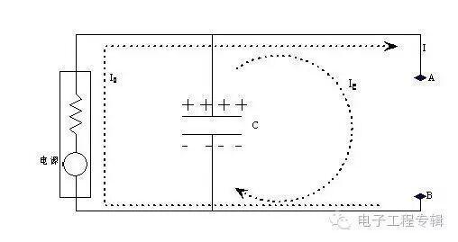
图片 2 电源部分
我们可以用一个等效电源模型表示上面这个复合的电源系统，如图 3
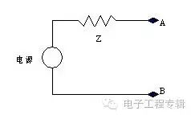
图 3 等效电源
对于这个电路可写出如下等式：
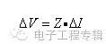
（公式 2）我们的最终设计目标是，不论 AB 两点间负载瞬态电流如何变化，都要保持 AB 两点间电压变化范围很小，根据公式 2，这个要求等效于电源系统的阻抗 Z 要足够低。在图 2 中，我们是通过去耦电容来达到这一要求的，因此从等效的角度出发，可以说去耦电容降低了电源系统的阻抗。另一方面，从电路原理的角度来说，可得到同样结论。电容对于交流信号呈现低阻抗特性，因此加入电容，实际上也确实降低了电源系统的交流阻抗。
从阻抗的角度理解电容退耦，可以给我们设计电源分配系统带来极大的方便。实际上，电源分配系统设计的最根本的原则就是使阻抗最小。最有效的设计方法就是在这个原则指导下产生的。
正确使用电容进行电源退耦，必须了解实际电容的频率特性。理想电容器在实际中是不存在的，这就是为什么经常听到“电容不仅仅是电容”的原因。
实际的电容器总会存在一些寄生参数，这些寄生参数在低频时表现不明显，但是高频情况下，其重要性可能会超过容值本身。图 4 是实际电容器的 SPICE 模型，图中，ESR 代表等效串联电阻，ESL 代表等效串联电感或寄生电感，C 为理想电容。
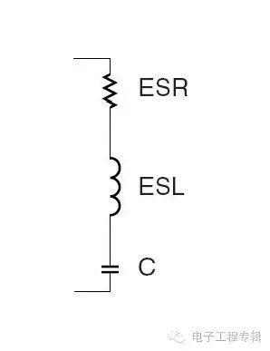
图 4 电容模型
等效串联电感（寄生电感）无法消除，只要存在引线，就会有寄生电感。这从磁场能量变化的角度可以很容易理解，电流发生变化时，磁场能量发生变化，但是不可能发生能量跃变，表现出电感特性。寄生电感会延缓电容电流的变化，电感越大，电容充放电阻抗就越大，反应时间就越长。等效串联电阻也不可消除的，很简单，因为制作电容的材料不是超导体。
讨论实际电容特性之前，首先介绍谐振的概念。对于图 4 的电容模型，其复阻抗为：
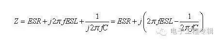
（公式 3）
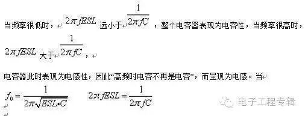
时，此时容性阻抗矢量与感性阻抗之差为 0，电容的总阻抗最小，表现为纯电阻特性。该频率点就是电容的自谐振频率。自谐振频率点是区分电容是容性还是感性的分界点，高于谐振频率时，“电容不再是电容”，因此退耦作用将下降。因此，实际电容器都有一定的工作频率范围，只有在其工作频率范围内，电容才具有很好的退耦作用，使用电容进行电源退耦时要特别关注这一点。寄生电感（等效串联电感）是电容器在高于自谐振频率点之后退耦功能被消弱的根本原因。图 5 显示了一个实际的 0805 封装 0.1uF 陶瓷电容，其阻抗随频率变化的曲线。
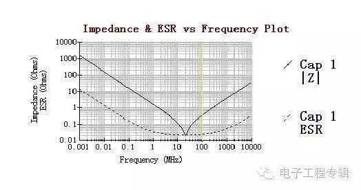
图 5 电容阻抗特性
电容的自谐振频率值和它的电容值及等效串联电感值有关，使用时可查看器件手册，了解该项参数，确定电容的有效频率范围。下面列出了 AVX 生产的陶瓷电容不同封装的各项参数值。
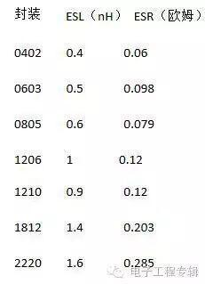
电容的等效串联电感和生产工艺和封装尺寸有关，同一个厂家的同种封装尺寸的电容，其等效串联电感基本相同。通常小封装的电容等效串联电感更低，宽体封装的电容比窄体封装的电容有更低的等效串联电感。
既然电容可以看成 RLC 串联电路，因此也会存在品质因数，即 Q 值，这也是在使用电容时的一个重要参数。
电路在谐振时容抗等于感抗，所以电容和电感上两端的电压有效值必然相等，电容上的电压有效值 UC=I*1/ωC=U/ωCR=QU，品质因数 Q=1/ωCR，这里 I 是电路的总电流。电感上的电压有效值 UL=ωLI=ωL*U/R=QU，品质因数Q=ωL/R。因为：UC=UL 所以 Q=1/ωCR=ωL/R。电容上的电压与外加信号电压 U 之比 UC/U=（I*1/ωC）/RI=1/ωCR=Q。电感上的电压与外加信号电压 U 之比 UL/U=ωLI/RI=ωL/R=Q。从上面分析可见，电路的品质因数越高，电感或电容上的电压比外加电压越高。
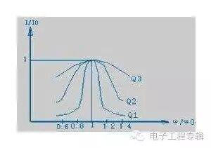
图 6 Q 值的影响
Q 值影响电路的频率选择性。当电路处于谐振频率时，有最大的电流，偏离谐振频率时总电流减小。我们用 I/I0 表示通过电容的电流与谐振电流的比值，即相对变化率。表示频率偏离谐振频率程度。图 6 显示了 I/I0 与
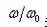
关系曲线。这里有三条曲线，对应三个不同的 Q 值，其中有 Q1>Q2>Q3。从图中可看出当外加信号频率 ω 偏离电路的谐振频率 ω0时，I/I0 均小于 1。Q 值越高在一定的频偏下电流下降得越快，其谐振曲线越尖锐。也就是说电路的选择性是由电路的品质因素 Q 所决定的，Q 值越高选择性越好。在电路板上会放置一些大的电容，通常是坦电容或电解电容。这类电容有很低的 ESL，但是 ESR 很高，因此 Q 值很低，具有很宽的有效频率范围，非常适合板级电源滤波。
当电容安装到电路板上后，还会引入额外的寄生参数，从而引起谐振频率的偏移。充分理解电容的自谐振频率和安装谐振频率非常重要，在计算系统参数时，实际使用的是安装谐振频率，而不是自谐振频率，因为我们关注的是电容安装到电路板上之后的表现。
电容在电路板上的安装通常包括一小段从焊盘拉出的引出线，两个或更多的过孔。我们知道，不论引线还是过孔都存在寄生电感。寄生电感是我们主要关注的重要参数，因为它对电容的特性影响最大。电容安装后，可以对其周围一小片区域有效去耦，这涉及到去耦半径问题，本文后面还要详细讲述。现在我们考察这样一种情况，电容要对距离它 2 厘米处的一点去耦，这时寄生电感包括哪几部分。首先，电容自身存在寄生电感。从电容到达需要去耦区域的路径上包括焊盘、一小段引出线、过孔、2 厘米长的电源及地平面，这几个部分都存在寄生电感。相比较而言，过孔的寄生电感较大。可以用公式近似计算一个过孔的寄生电感有多大。 公式为
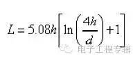
其中：L 是过孔的寄生电感，单位是 nH。h 为过孔的长度，和板厚有关，单位是英寸。d为过孔的直径，单位是英寸。下面就计算一个常见的过孔的寄生电感，看看有多大，以便有一个感性认识。设过孔的长度为 63mil（对应电路板的厚度 1.6 毫米，这一厚度的电路板很常见），过孔直径 8mil，根据上面公式得：
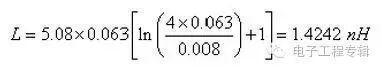
这一寄生电感比很多小封装电容自身的寄生电感要大，必须考虑它的影响。过孔的直径越大，寄生电感越小。过孔长度越长，电感越大。下面我们就以一个 0805 封装 0.01uF 电容为例，计算安装前后谐振频率的变化。参数如下：容值：C=0.01uF。电容自身等效串联电感：ESL=0.6 nH。安装后增加的寄生电感：Lmount=1.5nH。
电容的自谐振频率：
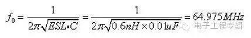
安装后的总寄生电感：0.6+1.5=2.1nH。注意，实际上安装一个电容至少要两个过孔，寄生电感是串联的，如果只用两个过孔，则过孔引入的寄生电感就有 3nH。但是在电容的每一端都并联几个过孔，可以有效减小总的寄生电感量，这和安装方法有关。
安装后的谐振频率为：
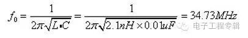
可见，安装后电容的谐振频率发生了很大的偏移，使得小电容的高频去耦特性被消弱。在进行电路参数设计时，应以这个安装后的谐振频率计算，因为这才是电容在电路板上的实际表现。
安装电感对电容的去耦特性产生很大影响，应尽量减小。实际上，如何最大程度的减小安装后的寄生电感，是一个非常重要的问题。
从电源系统的角度进行去耦设计
先插一句题外话，很多人在看资料时会有这样的困惑，有的资料上说要对每个电源引脚加去耦电容，而另一些资料并不是按照每个电源引脚都加去偶电容来设计的，只是说在芯片周围放置多少电容，然后怎么放置，怎么打孔等等。那么到底哪种说法及做法正确呢？我在刚接触电路设计的时候也有这样的困惑。其实，两种方法都是正确的，只不过处理问题的角度不同。看过本文后，你就彻底明白了。
上一节讲了对引脚去耦的方法，这一节就来讲讲另一种方法，从电源系统的角度进行去耦设计。该方法本着这样一个原则：在感兴趣的频率范围内，使整个电源分配系统阻抗最低。其方法仍然是使用去耦电容。
电源去耦涉及到很多问题：总的电容量多大才能满足要求？如何确定这个值？选择那些电容值？放多少个电容？选什么材质的电容？电容如何安装到电路板上？电容放置距离有什么要求？下面分别介绍。
著名的 Target Impedance（目标阻抗）
目标阻抗（Target Impedance）定义为：
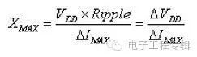
（公式 4）
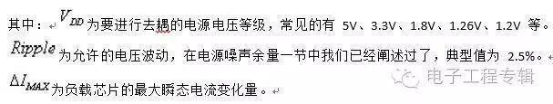
该定义可解释为：能满足负载最大瞬态电流供应，且电压变化不超过最大容许波动范围的情况下，电源系统自身阻抗的最大值。超过这一阻抗值，电源波动将超过容许范围。如果你对阻抗和电压波动的关系不清楚的话，请回顾“电容退耦的两种解释”一节。
对目标阻抗有两点需要说明：
1、目标阻抗是电源系统的瞬态阻抗，是对快速变化的电流表现出来的一种阻抗特性。
2、目标阻抗和一定宽度的频段有关。在感兴趣的整个频率范围内，电源阻抗都不能超过这个值。阻抗是电阻、电感和电容共同作用的结果，因此必然与频率有关。感兴趣的整个频率范围有多大？这和负载对瞬态电流的要求有关。顾名思义，瞬态电流是指在极短时间内电源必须提供的电流。如果把这个电流看做信号的话，相当于一个阶跃信号，具有很宽的频谱，这一频谱范围就是我们感兴趣的频率范围。
如果暂时不理解上述两点，没关系，继续看完本文后面的部分，你就明白了。
需要多大的电容量
有两种方法确定所需的电容量。第一种方法利用电源驱动的负载计算电容量。这种方法没有考虑 ESL 及 ESR 的影响，因此很不精确，但是对理解电容量的选择有好处。第二种方法就是利用目标阻抗（Target Impedance）来计算总电容量，这是业界通用的方法，得到了广泛验证。你可以先用这种方法来计算，然后做局部微调，能达到很好的效果，如何进行局部微调，是一个更高级的话题。下面分别介绍两种方法。
方法一：利用电源驱动的负载计算电容量
设负载（容性）为 30pF，要在 2ns 内从 0V 驱动到 3.3V，瞬态电流为：
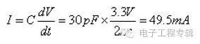
（公式 5）如果共有 36 个这样的负载需要驱动，则瞬态电流为：36*49.5mA=1.782A。假设容许电压波动为：3.3*2.5%=82.5 mV，所需电容量为
C=I*dt/dv=1.782A*2ns/0.0825V=43.2nF
说明：所加的电容实际上作为抑制电压波纹的储能元件，该电容必须在 2ns 内为负载提供1.782A 的电流，同时电压下降不能超过 82.5 mV，因此电容值应根据 82.5 mV 来计算。记住：电容放电给负载提供电流，其本身电压也会下降，但是电压下降的量不能超过 82.5mV（容许的电压波纹）。这种计算没什么实际意义，之所以放在这里说一下，是为了让大家对去耦原理认识更深。
方法二：利用目标阻抗计算电容量（设计思想很严谨，要吃透）
为了清楚的说明电容量的计算方法，我们用一个例子。要去耦的电源为 1.2V，容许电压波动为 2.5%，最大瞬态电流 600mA，
第一步：计算目标阻抗
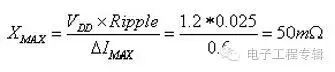
第二步：确定稳压电源频率响应范围。
和具体使用的电源片子有关，通常在 DC 到几百 kHz 之间。这里设为 DC 到 100kHz。在100kHz 以下时，电源芯片能很好的对瞬态电流做出反应，高于 100kHz 时，表现为很高的阻抗，如果没有外加电容，电源波动将超过允许的 2.5%。为了在高于 100kHz 时仍满足电压波动小于 2.5%要求，应该加多大的电容？
第三步：计算 bulk 电容量
当频率处于电容自谐振点以下时，电容的阻抗可近似表示为：
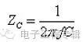
频率 f 越高，阻抗越小，频率越低，阻抗越大。在感兴趣的频率范围内，电容的最大阻抗不能超过目标阻抗，因此使用 100kHz 计算（电容起作用的频率范围的最低频率，对应电容最高阻抗）。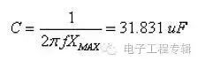
第四步：计算 bulk 电容的最高有效频率
当频率处于电容自谐振点以上时，电容的阻抗可近似表示为
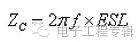
：频率 f 越高，阻抗越大，但阻抗不能超过目标阻抗。假设 ESL 为 5nH，则最高有效频率为：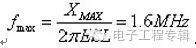
。这样一个大的电容能够让我们把电源阻抗在 100kHz 到1.6MHz 之间控制在目标阻抗之下。当频率高于 1.6MHz 时，还需要额外的电容来控制电源系统阻抗。第五步：计算频率高于 1.6MHz 时所需电容
如果希望电源系统在 500MHz 以下时都能满足电压波动要求，就必须控制电容的寄生电感量。必须满足
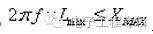
，所以有：
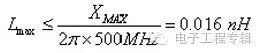
假设使用 AVX 公司的 0402 封装陶瓷电容，寄生电感约为 0.4nH，加上安装到电路板上后过孔的寄生电感（本文后面有计算方法）假设为 0.6nH，则总的寄生电感为 1 nH。为了满足总电感不大于 0.16 nH 的要求，我们需要并联的电容个数为：1/0.016=62.5 个，因此需要 63 个 0402 电容。
为了在 1.6MHz 时阻抗小于目标阻抗，需要电容量为：
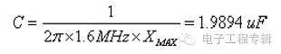
因此每个电容的电容量为 1.9894/63=0.0316 uF。
综上所述，对于这个系统，我们选择 1 个 31.831 uF 的大电容和 63 个 0.0316 uF 的小电容即可满足要求。
相同容值电容的并联
使用很多电容并联能有效地减小阻抗。63 个 0.0316 uF 的小电容（每个电容 ESL 为 1 nH）并联的效果相当于一个具有 0.159 nH ESL 的 1.9908 uF 电容。
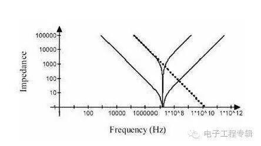
图 10 多个等值电容并联
单个电容及并联电容的阻抗特性如图 10 所示。并联后仍有相同的谐振频率，但是并联电容在每一个频率点上的阻抗都小于单个电容。
但是，从图中我们看到，阻抗曲线呈 V 字型，随着频率偏离谐振点，其阻抗仍然上升的很快。要在很宽的频率范围内满足目标阻抗要求，需要并联大量的同值电容。这不是一种好的方法，造成极大地浪费。有些人喜欢在电路板上放置很多 0.1uF 电容，如果你设计的电路工作频率很高，信号变化很快，那就不要这样做，最好使用不同容值的组合来构成相对平坦的阻抗曲线。
不同容值电容的并联与反谐振（Anti-Resonance）
容值不同的电容具有不同的谐振点。图 11 画出了两个电容阻抗随频率变化的曲线。
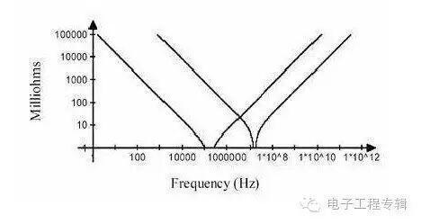
图 11 两个不同电容的阻抗曲线
左边谐振点之前，两个电容都呈容性，右边谐振点后，两个电容都呈感性。在两个谐振点之间，阻抗曲线交叉，在交叉点处，左边曲线代表的电容呈感性，而右边曲线代表的电容呈容性，此时相当于 LC 并联电路。对于 LC 并联电路来说，当 L 和 C 上的电抗相等时，发生并联谐振。因此，两条曲线的交叉点处会发生并联谐振，这就是反谐振效应，该频率点为反谐振点。
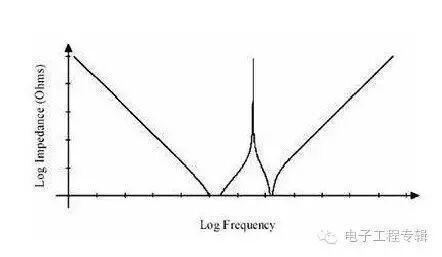
图 12 不同容值电容并联后阻抗曲线
两个容值不同的电容并联后，阻抗曲线如图 12 所示。从图 12 中我们可以得出两个结论：
a 不同容值的电容并联，其阻抗特性曲线的底部要比图 10 阻抗曲线的底部平坦得多（虽然存在反谐振点，有一个阻抗尖峰），因而能更有效地在很宽的频率范围内减小阻抗。
b 在反谐振（Anti-Resonance）点处，并联电容的阻抗值无限大，高于两个电容任何一个单独作用时的阻抗。并联谐振或反谐振现象是使用并联去耦方法的不足之处。在并联电容去耦的电路中，虽然大多数频率值的噪声或信号都能在电源系统中找到低阻抗回流路径，但是对于那些频率值接近反谐振点的，由于电源系统表现出的高阻抗，使得这部分噪声或信号能量无法在电源分配系统中找到回流路径，最终会从 PCB 上发射出去（空气也是一种介质，波阻抗只有几百欧姆），从而在反谐振频率点处产生严重的 EMI 问题。
因此，并联电容去耦的电源分配系统一个重要的问题就是：合理的选择电容，尽可能的压低反谐振点处的阻抗。
ESR 对反谐振（Anti-Resonance）的影响Anti-Resonance 给电源去耦带来麻烦，但幸运的是，实际情况不会像图 12 显示的那么糟糕。
实际电容除了 LC 之外，还存在等效串联电阻 ESR。
因此，反谐振点处的阻抗也不会是无限大的。实际上，可以通过计算得到反谐振点处的阻抗，X 为反谐振点处单个电容的阻抗虚部（均相等）。